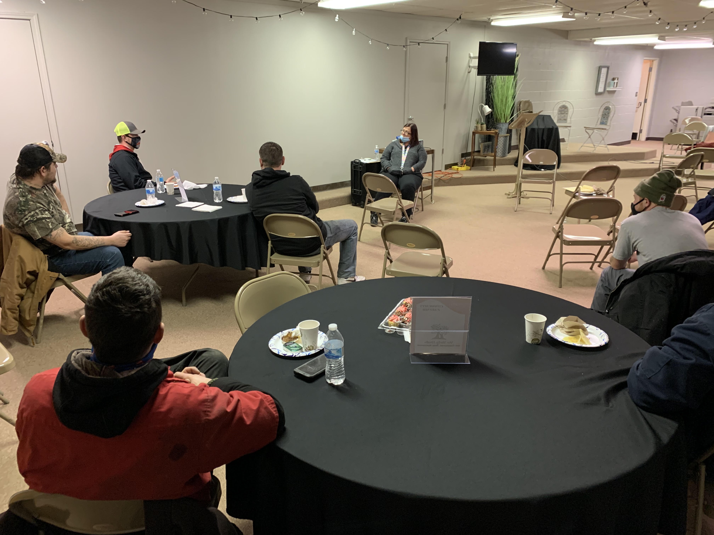
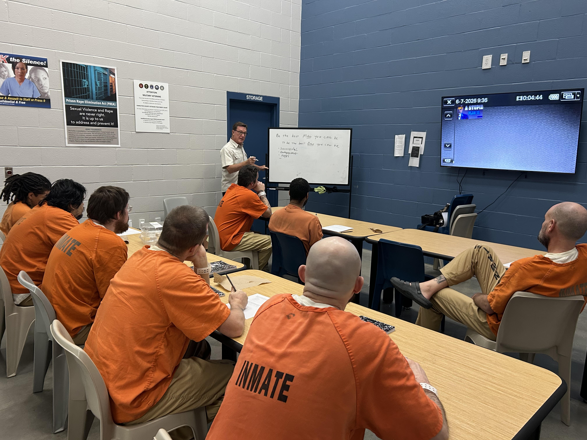

Influence
Understanding that no one can change anyone else, our classroom programs provide guidance, information and testimonials to influence the dads to make the life changes needed to be a dad to their kids.
CLASSROOM INSTRUCTION
Our Dedicated Dads program provides fatherhood awareness and training through the Madison County, IN, Problem Solving Court to its participants—formerly incarcerated men who have been released from incarceration to benefit from two years of recovery and life training.
Additionally, we provide classroom instruction on an ongoing basis to fathers currently incarcerated at the Madison County Correctional Complex, and through the TOWER program at the Hamilton County, IN, jail.
Our two fundamentals of fatherhood:
The Dedicated Dads class series is based on a collection of information and materials from the National Fatherhood Initiative, All Pro Dad, and several long time family practice psychologists and social service professionals in central Indiana. Throughout the class series, we focus of elements of our unique Dedicated Dads Fatherhood Plan—challenging the dads to identify the man and dad they want to become, and the steps needed to reach those goals.
Included in the plan are materials and discussion on:


The Three Pillars
Understanding that no one can change anyone else, our classroom programs provide guidance, information and testimonials to influence the dads to make the life changes needed to be a dad to their kids.
The 10-week class program challenges the dads to determine their role as a father and the improvements they need to make. Using local therapy and social service professionals along with past Dedicated Dads graduates, training covers: the 5 P’s of fatherhood, co-parenting techniques, child development stages, handling family conflict, discipline vs. punishment, and how to find local social services.
When the men demonstrate a commitment to fatherhood and are free of any substance abuse, we help them connect and build their role as dads through legal assistance, job placement, social services coordination, and continuing mentoring.
For Graduates of Dedicated Dads
After working with troubled dads for years in the classroom setting, it became clear that even after the men had turned a corner in their lives, major hurdles existed for them in moving into a productive and constructive life. Few had a car to drive to a good-paying job, many didn’t have an apartment or home large enough for the kids to spend overnight, and few had the funds needed to obtain legal help when needed to gain rights with their kids.
Dedicated Dads 2.0 is our response to those needs—We Help Dads will raise funds to directly help the dads overcome these obstacles following graduation from our classroom program, and upon acceptance of ongoing mentoring.
Direct financial assistance in obtaining needed housing, transportation and other essential life needs.
Legal assistance in obtaining rights with their children through our coordination of a grant from the Indiana Supreme Court.
Mentoring to assist the dad in making the best choices and following the steps of their own Fatherhood Plan, developed in Dedicated Dads classes.
Get Involved
For questions about Dedicated Dads, referrals, class schedules, or partnership, contact Jeff directly.